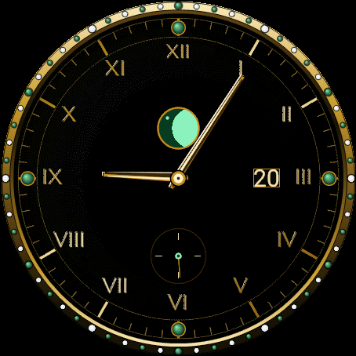
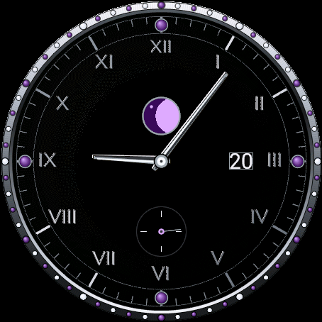

Empress｜无边框计时码表风Garmin珠宝表盘
Empress并非简单地将文字盘染成金色，而是以真正珠宝腕表的理念来镶嵌宝石的Garmin表盘。取消了表圈边框，让表盘延伸至屏幕边缘，呈现出计时码表风的布局。这是佐藤雄一Garmin系列中的第3款表盘，继Aurum的金色与Overwatch的黑色数据风格之后推出。
结论：5种真正的宝石款式只需一次购买即可全部使用，3个子表盘让心率・电量・步数始终一目了然。
适合什么样的人？
- 拥有对应Garmin机型，觉得预装表盘不够特别的用户
- 希望在正式场合也能佩戴的华丽表盘的用户
- 希望心率・电量・步数能一目了然、同时显示的用户
- 希望根据心情或穿搭选择宝石颜色的用户
5种款式
| 款式 | 特点 |
|---|---|
| Sapphire(蓝宝石) | 金色子表盘，搭配深蓝色蓝宝石 |
| Emerald(祖母绿) | 金色子表盘，搭配深绿色祖母绿 |
| Ruby(红宝石) | 金色子表盘，搭配温暖的红色红宝石 |
| Amethyst(紫水晶) | 铂金子表盘，搭配深紫色紫水晶 |
| Diamond White(钻石白) | 铂金子表盘，搭配通透如冰的石材——5款中最简洁的一款 |





关于工艺
每一款表盘都不是平面宝石色块，而是按照真正珠宝的结构绘制而成。12・3・6・9点的时标是圆形凸圆宝石，其余时标则是镶嵌在抛光金属框中的方形切割宝石。3个子表盘均为放射状光泽(sunburst)金属材质，边缘镶嵌交替排列的该款式宝石与钻石。数字时间显示于拉丝金属材质的装饰框内。完全没有表圈边框——仅在屏幕最外缘保留极细的分钟刻度，让整个屏幕都成为表盘的一部分。
主要功能
| 功能 | 说明 |
|---|---|
| 12点子表盘 | 心率表，中央为月相窗 |
| 9点子表盘 | 手表本体电量 |
| 6点子表盘 | 相对每日目标的步数 |
| 数字时间面板 | 星期・日期，带AM/PM的大号时间，以及1项数据(默认为消耗卡路里，也可更改为爬升楼层・距离・Body Battery・通知数等) |
| 秒针显示 | 数字秒・扫秒针・不显示，三选一 |
| 表盘颜色 | 可选黑色／炭灰色 |
| 支持常亮显示(Always-On) | 低电量状态下切换为仅显示轮廓的简易画面，兼顾省电与防烧屏 |
适配机型
Venu 3／Venu 3S／Forerunner 265／Forerunner 265S／Forerunner 965／fenix 8 AMOLED（43・47mm）／fenix 9（43・47mm）／fenix 9 Pro（43・47・51mm）／epix Pro (Gen 2) 47mm
价格与购买方式
安装后24小时内，所有功能均可免费试用。试用期结束后，一次性解锁购买(US$6.99・买断制)即可使用全部功能，无追加费用或按月付费。
试用期结束后，表盘会显示6位数代码及「www.kzl.io/code」网址。在手机等设备上打开该网址并输入代码完成支付后，数分钟内自动解锁。支付由第三方服务KiezelPay(信用卡／PayPal)处理，并非Garmin官方。购买一次后，同一Garmin账户下的其他适配机型无需再次购买。
常见问题
Q. Empress可以免费使用吗？
A. 安装后24小时内，所有功能均可免费试用。试用期结束后，一次性支付US$6.99即可使用全部功能，无需按月付费。
Q. 支付在哪里进行？
A. 并非Garmin官方支付，而是由第三方服务「KiezelPay」处理。试用期结束后，表盘会显示6位数代码和网址，在手机上打开该网址并输入代码即可完成支付(支持信用卡・PayPal)。
Q. 5种款式需要分别购买吗？
A. 不需要。Sapphire・Emerald・Ruby・Amethyst・Diamond White这5种款式只需一次购买即可全部解锁，并可随时在设置中切换。
Q. 月相和秒针显示可以更改设置吗？
A. 可以。设置中可以开关月相显示，并可将秒针显示切换为数字秒・扫秒针或完全关闭。
Q. 支持哪些机型？
A. 支持Venu 3・Venu 3S・Forerunner 265・Forerunner 265S・Forerunner 965・fenix 8 AMOLED・fenix 9・fenix 9 Pro・epix Pro (Gen 2) 47mm。